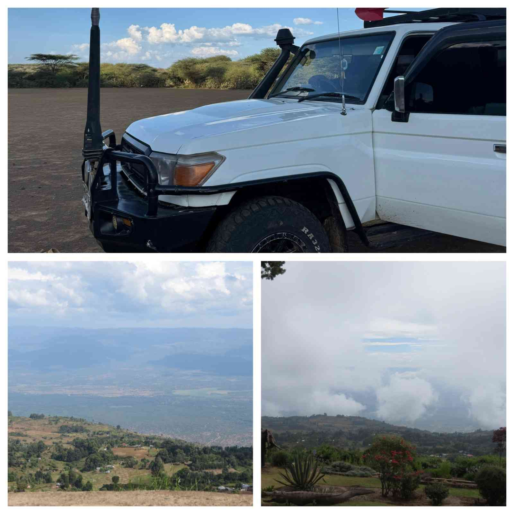
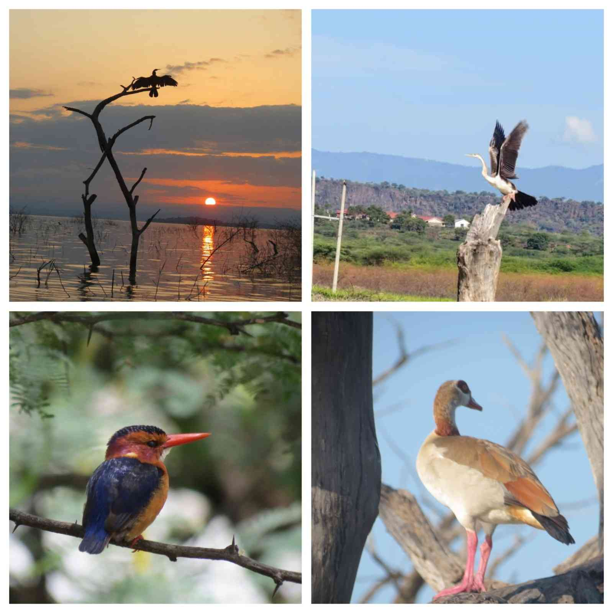
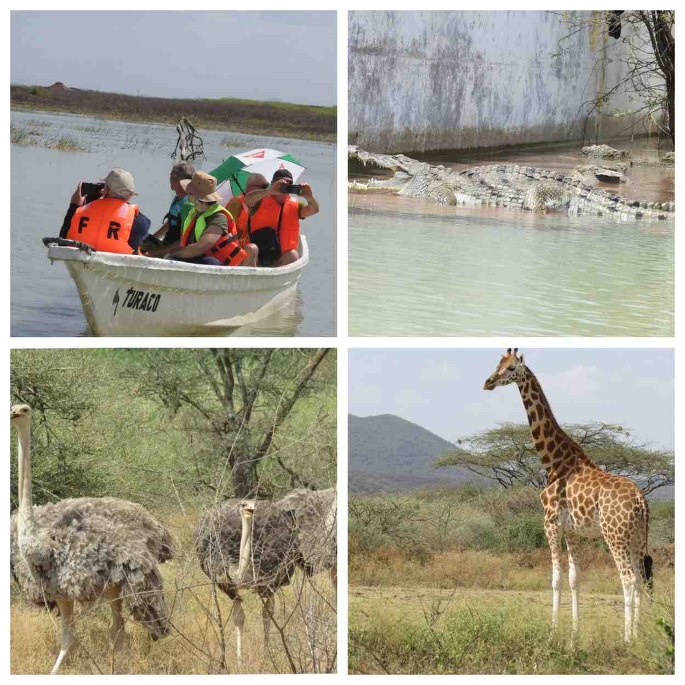
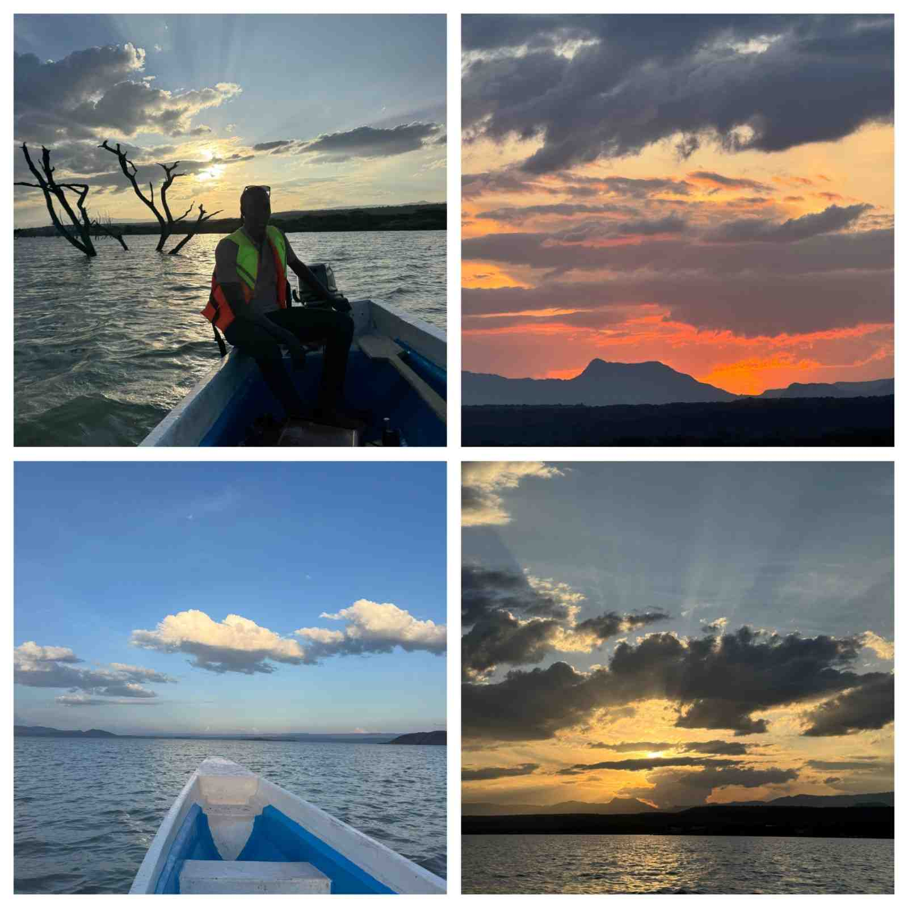
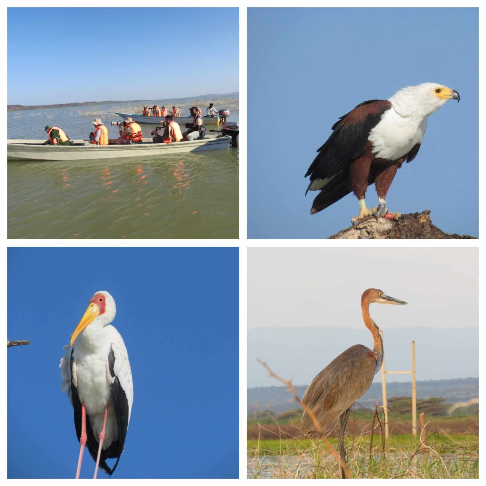
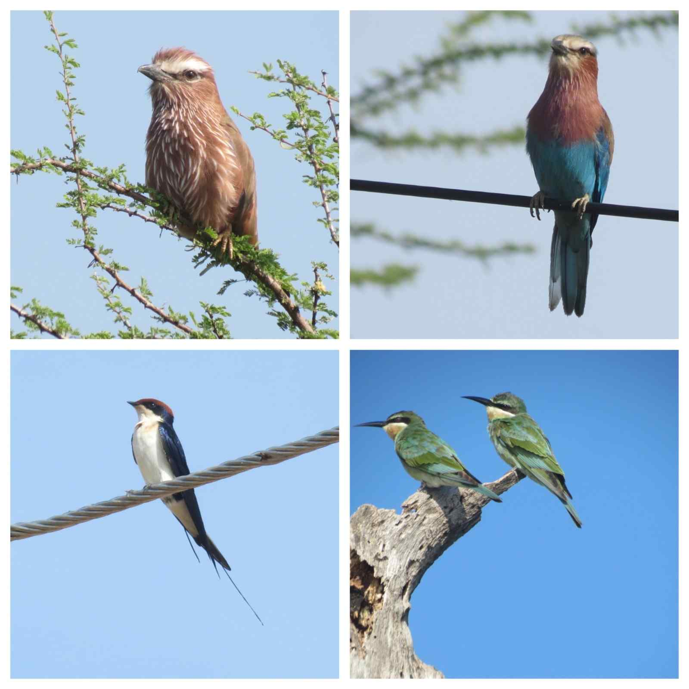
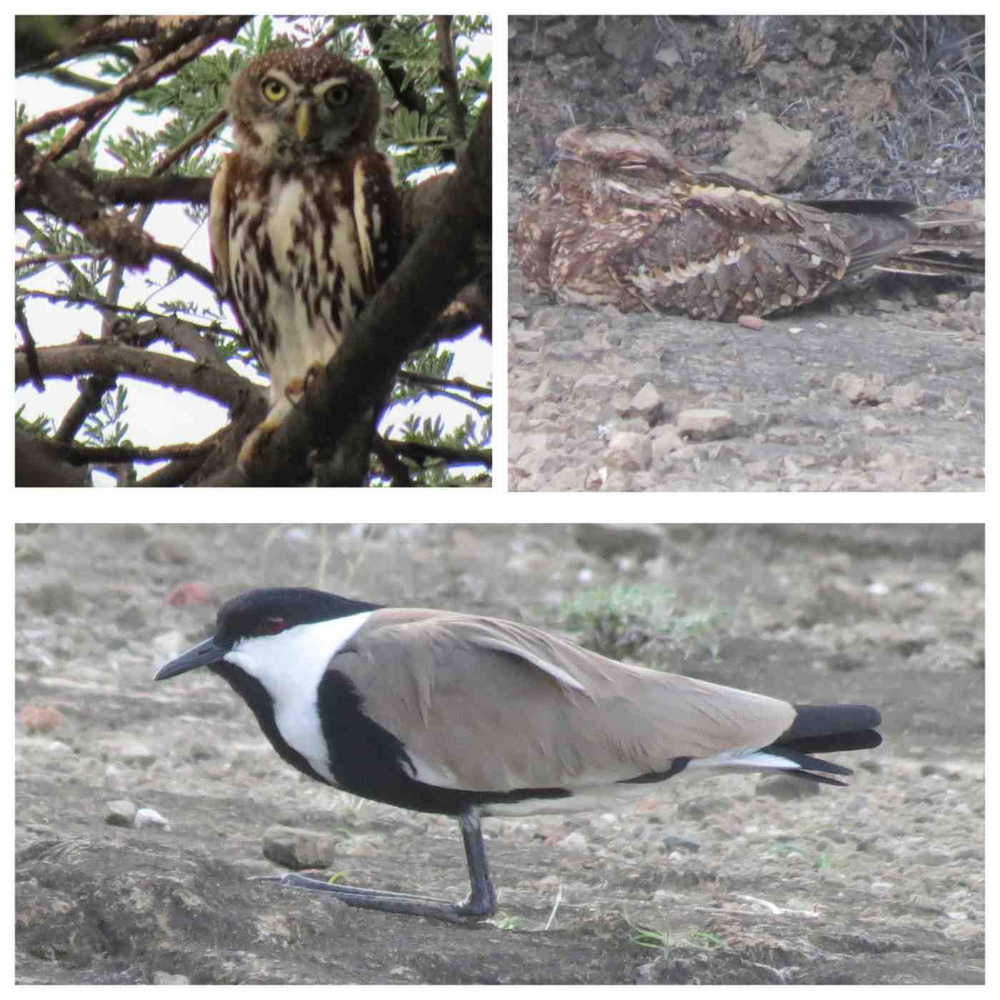
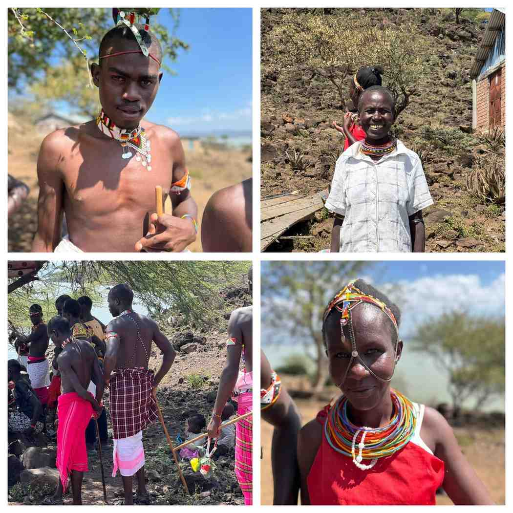
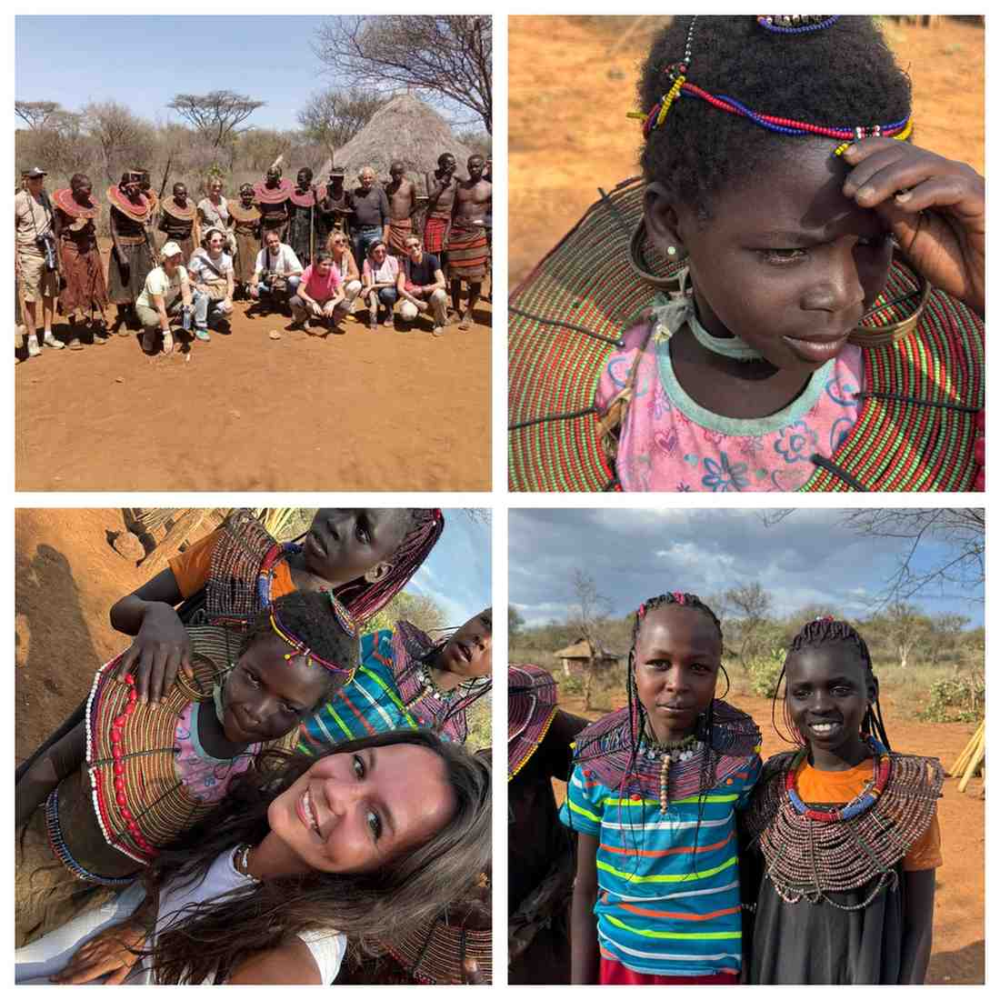

Lake Baringo – Adventure of a Lifetime
Unlike other Kenya’s top destinations such asMasai Mara,Ol-Pejeta or Diani, lies a rift valley water lake in the Northern Kenya.
Lake Baringo is known for its uniqueness of birdlife. It is known as the birdwatcher’s paradise. The lake Baringo Area has 500 species of birds found within.
Lake Baringo is located 35 miles North of equator. It is 2 hours’ drive from Lake Nakuru National Park and 3.5-4 hours’ drive from Nairobi.
How to Get to Lake Baringo?
By Road: This is the most common, adventurous and convenient way to travel to lake Baringo. By road you can visit other parks such as Lake Nakuru National park for a game drive or Lake Naivasha, Hell’s gate or even stop at major view point such as the Elementeita View point for spectacular panoramic views and rift valley scenery. (This is recommended for a multi-day tours)
By Air: Using helicopter or an airplane is the fastest, more adventurous and expensive. You can fly from your destination to Kampi ya samaki Airstrip in lake Baringo. You will then be picked for transfer from the Airstrip to the hotel. If you need a private chauffeur and guide services to other destinations in Baringo County it can be provided at your request.

You can fly from Mombasa International Airport to Eldoret Airport. You will be picked at the Airport to start your safari to Baringo. In Eldoret you can visit Koromosho falls, visit Kerio View Hotel in Iten for a lunch or will pass by Iten View Point or also Kessup falls. Enjoy the view and s-shaped road as you climb down from the Highlands of Elgeiyo Maraket to the Kerio Valley Chebloch Gorge.
Things to do in Lake Baringo
Boat Riding

Explore lake Baringo by Boat as the lake awaken with the golden color.
Morning sunrise boat riding offers great and tranquil environment to see a lot of hippos, crocodiles and birds such as Fish Eagles, Osprey, egrets, herons, kingfishers, African darter and comorans.
As you glide along the shore, you will see a lot of houses and hotels have submerged due to rising water levels in lake Baringo. Apart from birds and crocodiles, lake Baringo being a fresh water lake it has 5 types of fish namely; Tilapia, Catfish, lungfish, labeos and barbus.
Visit the Ol-Kokwe Island hot springs and Ruko conservancy. Ruko Conservancy is home to 33 Rothschild Giraffes, Common Zebras, Ostriches, Kudus and plenty of Birds.

Sundowner boat riding lets you explore the lake Baringo’s evening magical moment.

Boat riding activity depends on the number of hours you want to explore the lake. Read Boat riding in lake Baringo.
Boat riding is charged per person per hour
Birdwatching and Nature Walk

Discover 500+ species of birds in the lake Baringo Conservation Area.
Birdwatching activity can do in three different times;
Morning Birdwatching:
This activity is recommended to do a boat riding in the morning along the shore. During the morning hours you are guaranteed to see plenty of wading birds. Egrets; Intermediate egret, greater egret, little egret. Herons; Goliath heron, night heron, striated heron, cocoi heron, grey heron. Kingfishers, Fish eagle, Bee-eaters, cormorants, African darter. This activity recommend time is 2-3 hours. Our guided boat tours will take you to birding hotspots in the lake and on the Islands.
Afternoon Birdwatching
Birdwatching in the afternoon can be done on a walk or by vehicle. The best time is 3:30pm or 4:00pm. During this activity you will explore terrestrial birds of Baringo this includes; Jacksons hornbill, Hemprich hornbill, African grey hornbill, white-bellied go away bird, cliff charts, cisticolas, forktail drongo, bristle crowned sterling, white crested turaco among others.

Night Bird walks
The night bird walk can be done starting at aound 6:30pm. You will spot nocturnal birds this includes; nightjars, pearl spotted owlet, corsars etc
During the nightwalk it is recommended you wear good shoes and long trousers to protect your legs and feet from scorpions and spikes from acacia and prosopis euliflora.

Cultural Tour
Cultural tours around Lake Baringo offer a raw and authentic look at two of Kenya's most fascinating communities: the Pokot and the Njemps (also known as the Ilchamus). Unlike the more commercialized cultural experiences in the south, Baringo provides a glimpse into lives that still revolve deeply around the lake's ecosystem and ancient pastoral traditions.
The Njemps (Ilchamus): The Fishermen of the Rift

The Njemps are a unique Nilotic group. While they speak a language similar to the Maasai, they are one of the few "Maa" communities that have historically embraced fishing.
You can watch (and ride in) their traditional canoes made from Ambach wood, a incredibly light, cork-like material. These boats are held together with wild sisal and are essential for navigating the hippo-filled waters.
Many tours take you to this volcanic island, which is a primary Njemps settlement. Here, you can visit homesteads built from local materials and see how they manage livestock on a secluded island.
Njemps women are famous for their intricate, colorful beadwork, which signifies marital status and social rank. You can often purchase these crafts directly from the makers.
You can witness their unique fishing techniques using hand-paddled canoes and nets, a practice that has sustained them for centuries.
The Pokot: The Semi-Nomadic Pastoralists
The Pokot live primarily on the plains and hills surrounding the lake. Their culture is centered almost entirely around their livestock—wealth is measured in cows, goats, and sheep.

A tour typically involves visiting a boma (homestead). You’ll see their unique architecture—sturdy huts designed to withstand the semi-arid heat.
The Pokot are known for high-energy, rhythmic jumping dances and songs that celebrate successful harvests or marriages. The Pokot take great pride in aesthetic beauty. Women wear heavy, disc-shaped beaded necklaces and elaborate brass earrings, while men may display specific hairstyles or scars that denote their bravery or age-set.
Book Now